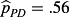
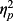

Situational Affordances for Prosocial Behaviour: On the Interaction Between Honesty‐Humility and (Perceived) Interdependence
Abstract
Individual differences in prosocial behaviour are well‐documented. Increasingly, there has been a focus on the specific situations in which particular personality traits predict prosocial behaviour. HEXACO Honesty‐Humility—the basic trait most consistently linked to prosocial behaviour in prior studies—has been found to predict prosociality most strongly in situations that afford the exploitation of others. Importantly, though, it may be the subjectively perceived situation that affords the behavioural expression of a trait. Following this reasoning, we tested the proposition that Honesty‐Humility would predict prosocial behaviour more strongly in situations characterised by, and perceived to contain, two dimensions of interdependence that can afford exploitation: high conflict and high power. However, across a series of incentivised economic games and two large experience sampling studies, we only found inconsistent evidence for the association between Honesty‐Humility and prosocial behaviour. Furthermore, the link between Honesty‐Humility and prosociality was neither conditional on objective interdependence nor on subjective perceptions of interdependence. Nonetheless, perceptions of conflict and power tracked objective properties of economic games and were related to prosocial behaviour in the lab and field. Future research should take individuals' subjective understanding of situations into account, which may also help understand the (generalisability of the) effect of Honesty‐Humility on prosocial behaviour. © 2019 The Authors. European Journal of Personality published by John Wiley & Sons Ltd on behalf of European Association of Personality Psychology
Individual differences in prosocial behaviour
Although humans are a generally cooperative species, there exist striking individual differences in prosocial behaviour (Balliet, Parks, & Joireman, 2009; Fischbacher, Gächter, & Fehr, 2001). That is, whereas some individuals are willing to cooperate and to forgo individual gains to benefit others, other individuals are selfish and purely interested in maximizing their own gain (Balliet et al., 2009; van Lange, 1999). This tendency is demonstrated by one of the simplest measures of prosocial behaviour, the dictator game (Forsythe, Horowitz, Savin, & Sefton, 1994), in which one individual (the dictator) can freely decide whether to give a certain share of an endowment to another individual (the recipient) or not. In this situation, some dictators split their endowment (nearly) equally, whereas others keep the entire endowment to themselves, producing modes of sharing at 0% and 50% (Engel, 2011). Such individual differences can indeed be observed in several other economic game situations (Balliet et al., 2009) and have also been found to have considerable temporal stability (Baumert, Schlösser, & Schmitt, 2014; Peysakhovich, Nowak, & Rand, 2014; Volk, Thöni, & Ruigrok, 2011; Yamagishi et al., 2013; but see Smith, Larroucau, Mabulla, & Apicella, 2018). This suggests that there exist stable individual differences in prosocial behaviour.
Regarded through the lens of models of basic personality structure, the most consistent evidence to account for these individual differences in prosocial behaviour has been provided for the Honesty‐Humility dimension as proposed in the HEXACO model of personality (Ashton & Lee, 2007; Ashton, Lee, & de Vries, 2014). 11 The well‐established five‐factor model of personality (e.g. McCrae & Costa, 1987) also includes a dimension that captures prosocial dispositional tendencies in particular, namely Agreeableness (Denissen & Penke, 2008). However, correlations with prosocial behaviour tend to be weaker than for Honesty‐Humility (Thielmann, Spadaro, & Balliet, in press; Zhao & Smillie, 2015). Conceptually, Honesty‐Humility represents the tendency to ‘cooperat(e) with others even when one might exploit them without suffering retaliation’ (Ashton & Lee, 2007, p. 156). Indeed, Honesty‐Humility has been consistently shown to predict prosocial behaviours in a variety of game paradigms, including sharing in the dictator game (Thielmann & Hilbig, 2018; Zhao, Ferguson, & Smillie, 2017) and in the trust game as trustee (Schild, Stern, & Zettler, 2019; Thielmann & Hilbig, 2015), as well as, though less frequently, contributions in the public goods game (Hilbig, Zettler, & Heydasch, 2012), with effect sizes typically being small to medium‐sized (for a review, Zhao & Smillie, 2015; for a recent meta‐analysis, Thielmann et al., in press).
Importantly, however, the association of Honesty‐Humility with prosocial behaviour—and of other personality traits more generally—may be situation‐dependent: Whereas in previous studies Honesty‐Humility showed a strong link to prosocial behaviour in situations in which prosociality is a matter of nonexploitation (such as modelled by the dictator game), it showed no such link to prosocial behaviour in situations in which prosociality is a matter of nonretaliation (such as modelled by responder behaviour in the ultimatum game; Thielmann et al., in press). Even within the same kind of game, the predictive power of personality traits may depend on features of the payoff structure of the game. For example, in one study, Honesty‐Humility predicted cooperation in social dilemmas only in the presence of strong conflict of interests (Hilbig et al., 2018). This suggests that the link between particular personality traits—such as Honesty‐Humility—and prosocial behaviour may indeed depend on the features of the situation.
Situational affordances
The link between personality and prosocial behaviour may be context‐dependent because the features of the situation determine which traits can be expressed; any given situation will afford a person in the situation to engage in some behaviours, but not in others. In other words, situations provide opportunities and obstacles—affordances—for actions. For example, a water cooler chat with a collaborator may provide an opportunity to share knowledge (or keep it secret). In contrast, working individually on a project does not afford the sharing (or hiding) of knowledge. This means that situations crucially differ in the affordances they hold for actions, and it is these affordances that a person perceives in any given situation (Gibson, 1977, 1979; Jones, 2003).
Affordances are meaningful for the study of individual differences because in different situations, people can express different traits through actions. In other words, specific situational affordances may allow for the expression of certain traits, but not others, in behaviour (e.g., de Vries, Tybur, Pollet, & van Vugt, 2016; ten Berge & de Raad, 1999). In the examples above, a water cooler chat with a collaborator may particularly allow one to express one's level of Honesty‐Humility (by sharing knowledge vs. keeping it secret), but not, for instance, one's level of conscientiousness. In contrast, working individually on a project may particularly allow the expression of conscientiousness (by working diligently on the task vs. being more haphazard), but not of Honesty‐Humility. The situation, trait, and outcome activation model provides a framework for such situational affordances for trait expression and links each HEXACO dimension to specific (perceived) situation characteristics which afford its expression (de Vries et al., 2016).
Specifically, the situation, trait, and outcome activation model suggests that Honesty‐Humility will predict behaviour in situations involving perceived opportunities to exploit others. Such opportunities to exploit others may, for instance, arise from conflict of interests and power over one's own and others' outcomes (Hilbig et al., 2018): When a person perceives their interests to perfectly align with those of their interaction partner, they should not see any opportunity to exploit the other; it is only when interests between interaction partners diverge that exploitation becomes possible. Power, in turn, puts a person in the position to exploit the other in the sense that individuals holding greater power can (more) safely exploit others without fearing corresponding losses (e.g. from retribution). Being in situations in which one holds high power relative to others thus particularly affords exploitative (vs. nonexploitative) behaviour.
Interdependence theory describes affordances for prosocial behaviour
To comprehensively describe and understand which specific aspects of social situations (as modelled by economic games) might interact with personality traits to produce behaviour, it is helpful to draw on a broad taxonomy of interpersonal situations: interdependence theory (Kelley et al., 2003; Kelley & Thibaut, 1978). Interdependence theory describes meaningful dimensions of interdependence that are derived from the structure of a social situation and can be defined for all interactions between two individuals (Kelley et al., 2003): Mutual dependence, coordination versus social exchange, conflict of interests, and power. These dimensions describe the affordances a social situation holds for the expression of different traits. Importantly, although they are derived from an analysis of matrix games, the dimensions of interdependence theory can be used to describe the structure of any social situation involving two individuals. Here, we focus on conflict of interests and power, given that these have been specifically linked to the expression of Honesty‐Humility, both theoretically and empirically (Ashton & Lee, 2007; Barends, de Vries, & van Vugt, 2019; de Vries et al., 2016; Hilbig et al., 2018). 22 There is also a sizeable literature relating mutual dependence to prosocial behaviour, especially in romantic relationships (e.g. Rusbult & van Lange, 2003). However, this dimension has received much less interest in research on Honesty‐Humility and economic games. Moreover, there may be other situation characteristics than power and conflict that afford the expression of Honesty‐Humility, for example, affordances for lying and cheating (de Vries et al., 2016; Heck, Thielmann, Moshagen, & Hilbig, 2018) that are not captured in interdependence theory.
Conflict of interests
Conflict of interests indices the degree to which interests are corresponding (i.e. both persons can obtain their individually preferred outcomes) or rather conflicting (i.e. only one person at a time can obtain their individually preferred outcome). When conflict of interests is high, prosocial behaviour is unappealing; conversely, when conflict of interests is low, prosocial behaviour becomes more attractive. Specifically, the greater the conflict of interests is, the more a person needs to care about another's outcomes or to believe that the other person will behave prosocially in order to be willing to behave in a prosocial manner as well (Murphy & Ackermann, 2015). Indeed, the degree of conflict of interests in an experimental game is highly predictive of the observed rate of prosociality (Rapoport & Chammah, 1965; Vlaev & Chater, 2008).
Importantly, the same degree of conflict of interests can arise from different structural properties of the situation that are associated with different motivations to cooperate versus defect. In matrix games such as the prisoner's dilemma (Figure 1b), conflict can give rise to both fear and greed (Coombs, 1973): On the one hand, unilateral defection is tempting because it allows one to maximise one's own outcomes (and to minimise the outcomes of the other player), which may trigger defection based on greed. On the other hand, the danger of cooperating unilaterally and being exploited by the other player may trigger defection based on fear. The structural source of conflict of interests, in turn, determines trait expressions a game affords. Specifically, it is greed‐based conflict of interests that affords exploitation and therefore the expression of Honesty‐Humility. Indeed, Hilbig et al. (2018) found that Honesty‐Humility predicts cooperative behaviour in the chicken game—where cooperation might be undermined by greed—but not in the stag hunt—where cooperation might be undermined by fear (Haesevoets, Van Hiel, & Reinders Folmer, 2015, for similar findings). This suggests that Honesty‐Humility may explain noncooperation when conflict of interests is driven by greed, but not when it is driven by fear.
Power
Power is the degree to which outcome dependence is symmetric (i.e. both persons equally control each other's outcomes) or rather asymmetric (i.e. one person has more control over the other's outcomes than vice versa; Figure 1). At the most extreme, one person can fully control their own and the other's outcomes without having to fear negative consequences. This is the case in the dictator game, in which the dictator unilaterally determines the division of a sum of money between themselves and the recipient. This contrasts with the ultimatum game, in which a proposer offers a division, which the responder can accept or reject. In this case, both players hold more equal power.
Power thus puts a person in the position to exploit another, given that unilateral defection is tempting. At the extremes, a person with high power can exploit the other without fearing any negative consequences—which suggests that high power situations may particularly afford the expression of Honesty‐Humility. In contrast, situations involving low power do not afford exploitation. Indeed, previous experiments have found that Honesty‐Humility predicts cooperative behaviour better in the dictator game than in the ultimatum game (e.g.Barends et al., 2019 ; Hilbig & Zettler, 2009).
Subjective interdependence and affordances for prosocial behaviour and exploitation
Although conflict of interests and power asymmetry are objective properties of a given situation, it is arguably the subjective perception of situation characteristics that drives behaviour (Balliet, Tybur, & van Lange, 2017; Gibson, 1979; Holmes, 2002; Lewin, 1946; Mischel & Shoda, 1995; Rauthmann, Sherman, & Funder, 2015). According to functional interdependence theory (FIT; Balliet et al., 2017), people mentally represent interdependence—as, for instance, involved in economic games—along the dimensions of mutual dependence, conflict of interests, and power. This proposition is supported by measures of perceived situation characteristics (Gerpott, Balliet, Columbus, Molho, & de Vries, 2018): People are able to readily and accurately perceive everyday social situations along multiple dimensions of interdependence. Crucially for the issue at hand, individuals have also been shown to correctly distinguish different games on these dimensions of interdependence (Columbus, Molho, Righetti, & Balliet, 2019a; Gerpott et al., 2018). Thus, people can and do describe both highly standardised experimental games in the laboratory and social situations in everyday life along the same dimensions of interdependence.
However, individuals not only (accurately) perceive differences in the pattern of interdependence across situations; they also condition their behaviour on these perceptions (Balliet et al., 2017; Halevy, Chou, & Murnighan, 2012; Rauthmann et al., 2015). For instance, in one study, perceived conflict of interests explained nearly half of the difference in cooperation rates between the prisoner's dilemma and the stag hunt (Columbus et al., 2019a). Moreover, perceptions of interdependence, and in particular of conflict of interests, were associated with self‐reported and other‐reported prosocial behaviour in daily life (Columbus et al., 2019a), suggesting that perceptions of interdependence also play a crucial role when information about interdependence is not given explicitly (as in games). Likewise, another study found a similar mechanism for differences in prosocial behaviour between games involving different degrees of power asymmetry (Gerpott et al., 2018). Overall, prior evidence is thus commensurable with the idea that people do not directly act upon the objective situation, but rather upon the subjective (psychological) representation of the situation along the dimensions described by FIT.
We have argued so far that Honesty‐Humility can be expressed when the situation provides affordances for exploitation. Specifically, exploitation requires a conflict of interests based on greed—that is an opportunity to maximise one's earnings at a cost to one's interaction partner—and it is only possible if one has at least some power over the other person's outcomes (and becomes easier the more power one holds). Importantly, these affordances must be perceived in order for the individual to act on them. Thus, it is arguably perceived conflict of interests and power that afford the expression of Honesty‐Humility. Consequently, we expect that Honesty‐Humility should interact with perceived situation characteristics to predict prosocial behaviour. This is true both in the laboratory where, as in previous research, objective properties of the situation are transparent, and in daily life, where perceptions of interdependence are shaped by a wide range of cues (Balliet et al., 2017).
Testing a model of situational affordances for honesty‐humility
Based on FIT (Balliet et al., 2017), we predict that perceived conflict and power mediate the relation between objective interdependence and prosocial behaviour in economic games. Because it is these perceived situation characteristics that afford the expression of personality traits, we expect Honesty‐Humility to interact with perceived conflict of interests and power to predict prosocial behaviour and test this in a controlled lab setting. Moreover, we examine the generalisability of the findings to interactions in real life using experience sampling, thereby for the first time putting situational moderators of the expression of Honesty‐Humility to the test in a real‐life context.
The current study
Data
To test our hypotheses, we rely on the interdependence in daily life dataset (IDL; Columbus, Molho, Righetti, & Balliet, 2019b), which contains data from two Dutch community samples of individuals (IDL‐I; n = 284) and romantic couples (IDL‐C; n = 278). The data were originally collected as part of an unrelated project on interdependence in daily life (Columbus et al., 2019a). Although data had been collected by the time of conceiving the current set of hypotheses, we completed an informal preregistration before running the analyses. Data and analysis scripts as well as a list of all measures included in the IDL dataset are available on the Open Science Framework (OSF; data, analyses, and supplementary information: https://osf.io/br8kf; methods and materials for the IDL dataset: https://osf.io/yxq9n/).
The data set contains a measure of the HEXACO personality dimensions (self‐rated and, in the IDL‐C, also partner‐rated). Participants also played fully incentivised, one‐shot economic games (including chicken, stag hunt, dictator, and ultimatum games) with an anonymous other participants (IDL‐I) or their partner (IDL‐C) and rated each game on the situational interdependence scale (SIS; Gerpott et al., 2018). Finally, the participants completed a 7‐day experience sampling phase during which they reported on situations they experienced with others (IDL‐I) or specifically with their partner (IDL‐C). Each situation was rated on the SIS; in addition, participants indicated their own and their interaction partner's level of prosocial behaviour in the situation.
Predictions
As outlined above, economic games can differ in objective conflict of interests (indexed by the index of correspondence ICORR; Figure 1) and in the motivational basis of conflict of interests (i.e. greed vs. fear). The degree to which greed and fear motivate noncooperation in social dilemmas depends on structural properties of the game (and the corresponding 2 × 2 matrix). Consider the matrix in Figure 1a, which shows the players' outcomes for the four combinations of choices to cooperate versus defect in a matrix game: The reward for mutual cooperation (R), the temptation of unilateral defection (T), the sucker's pay‐off of unilateral cooperation (S), and the punishment of mutual defection (P). The prisoner's dilemma—defined as having the structure T > R > P > S (Figure 1a)—contains both greed (as T > R) and fear (as P > S), but two other social dilemma games, the chicken game and the stag hunt, isolate greed, and fear (Figure 2). In the chicken game (Figure 2a), the rank order of suckers pay‐off and punishment is reversed (i.e. T > R > S > P), meaning that mutual defection has worse consequences than unilateral cooperation. Thus, whereas the temptation of unilateral defection (i.e. greed) remains (as T > R), players no longer have a reason to fear being exploited (as P < S). In contrast, in the stag hunt (Figure 2b), the rank‐order of reward and temptation is reversed (i.e. R > T ≥ P > S). Now, unilateral defection is no longer tempting (as T < R); however, fear remains in case of unilateral cooperation (as P > S). As mentioned above, it is specifically greed‐based conflict of interests that affords exploitation and that should therefore also afford the expression of Honesty‐Humility.
Following up on the findings by Hilbig et al. (2018), who showed that Honesty‐Humility was a stronger predictor of cooperation in a high‐conflict chicken game than in a low‐conflict stag hunt, we expect that Honesty‐Humility predicts cooperation rates better in the chicken game (in which conflict arises from greed) than in the stag hunt (in which conflict arises from fear), even when both games have an equivalent ICORR = 0.2. Furthermore, we hypothesise that Honesty‐Humility explains cooperation in the chicken game better than in the stag hunt because the former is perceived as involving more conflict of interests (M = 3.20, SD = 0.94) than the latter (M = 2.25, SD = 1.07; Columbus et al., 2019a). In other words, individual differences in perceptions of conflict of interests should interact with Honesty‐Humility to predict cooperative behaviour (Figure 3).
Likewise, the dictator and the ultimatum game differ in the degree of power the dictator (respectively, proposer) holds over the other player's outcome. In the dictator game, the dictator can unilaterally determine the recipient's outcomes, that is, she has high power. In contrast, in the ultimatum game, the proposer can only make an offer which may be rejected, that is, she shares power with the responder. 33 These games—as well as the delta game, a variant that varies the proposer's control continuously by discounting the responder's control—have been widely used to study the effect of differences in power on prosocial behaviour (Barends et al., 2018; Suleiman, 1996; van Dijk, de Cremer, & Handgraaf, 2004). Consequently, we predict that Honesty‐Humility explains more variance in dictator game giving than in ultimatum game proposals, replicating Hilbig and Zettler (2009) as well as Barends et al. (2019), and that this is due to differences in perceived power between the two games.
Previous research (Barends et al., 2019; Hilbig et al., 2018; Hilbig & Zettler, 2009) has relied on manipulating objective interdependence under highly controlled, but artificial laboratory conditions. Here, we also test our predictions on reports about daily life interactions obtained in people's natural environments by means of experience sampling. As in the laboratory, we expect that Honesty‐Humility interacts with perceptions of both conflict of interests and power to predict prosocial behaviour. In addition, we test whether there exists a nonadditive (i.e. interaction) effect between perceived conflict and power on prosocial behaviour.
Methods
Sample
The IDL study consists of two large Dutch community samples (Columbus et al., 2019b, for details), (a) a sample of individuals (IDL‐I; n = 284, 30% male, Mage = 35.55 years, SD = 16.02, range 18–80) and (b) a sample of romantic couples (IDL‐C; n = 278; 50.7% male; Mage = 32.04 years, SD = 13.56, range 18–79). Participants were recruited through two panel agencies specialising in recruitment for marketing and medical studies, as well as through snowball sampling. Both samples are diverse with respect to educational attainment, socio‐economic status, and ancestry. We did not exclude any data points. However, effective sample sizes differ slightly between analyses due to missing values on individual items. We provide effective sample sizes for all tables in the supporting information (SI; Tables S11–S14).
Participants in both samples participated in a laboratory intake session in which they completed a battery of attitude and personality questionnaires and played several economic games. Subsequently, they participated in a week‐long experience sampling phase. Participants were paid 20 euros for participating in the intake session, up to 10 euros based on their own and others' behaviour in the economic games, 0.50 euros per experience sampling survey they completed, and a bonus of 20 euros for completing at least 75% of the experience sampling surveys. Participants earned an average of 60.23 euros (SD = 13.98) in IDL‐I and 63.65 euros (SD = 12.27) in IDL‐C, respectively, for about 4 hours of effort.
As an indication of the minimum effect sizes we were able to detect with these samples sizes, we conducted sensitivity power analyses (using G*Power; Faul, Erdfelder, Lang, & Buchner, 2007) for the effect of Honesty‐Humility on prosocial behaviour in each of the four games (i.e. chicken, stag hunt, dictator, and ultimatum games). We used the minimum sample size on which analyses were run (Table S12) and assumed (two‐tailed) alpha = .05 for all analyses. This revealed that we had 80% power to detect effects of odds ratios (OR) = 1.53 in the chicken game and OR = 1.56 in the stag hunt in logistic regression analyses, and of r = .15 in the dictator game and r = .15 in the ultimatum game in t‐tests for correlations.
Materials
Personality
Participants (nIDL − I = 282; nIDL − C = 277) completed the Dutch 60‐item, self‐report version (de Vries, Lee, & Ashton, 2008) of the HEXACO‐Personality Inventory‐Revised (HEXACO‐60; Ashton & Lee, 2009). The Honesty‐Humility factor had acceptable psychometric properties (IDL‐I: Ωh = .77; IDL‐C: Ωh = .75). In IDL‐C, participants further completed the Dutch HEXACO‐60 in observer version, providing reports about their partner. Again, the Honesty‐Humility factor had acceptable psychometric properties (Ωh = .69). We also computed self‐other agreement for Honesty‐Humility, r = .48, 95% confidence interval (CI) = [0.38, .56], p < .001; see SI for details. This estimate fully corresponds with a recent meta‐analysis suggesting self‐other agreement for Honesty‐Humility to be r = .47 (Moshagen, Thielmann, Hilbig, & Zettler, 2019)—even though this is somewhat lower than in another study of Dutch couples (r = .60; de Vries et al., 2008).
Economic games
Participants played a series of incentivised economic games with a real interaction partner and without deception. These included the chicken game (index of correspondence = 0.2), stag hunt (index of correspondence = 0.2), prisoner's dilemma (index of correspondence = ‐0.8), maximising differences game (index of correspondence = 0.8), dictator game, and ultimatum game. For each game, instructions were given on‐screen; participants had to correctly answer three comprehension questions before making their decision. In the IDL‐I, recorded responses were matched with those of other unknown participants participating in the same week; in the IDL‐C, they were matched with the participant's partner. One game was randomly selected for payment. 44 Because several incentivised tasks were used, including some that involved no other player, participants could not tell based on their earnings which game was selected or what decision the other player had made. We initially preregistered only analyses of the IDL‐I data, but also report exploratory results on the games played among romantic partners in the IDL‐C.
After making a choice in a game—but without receiving any feedback about the interaction partner's choice—participants also rated each game on the 10‐item short version of the SIS (Gerpott et al., 2018; see ‘Experience sampling’) using a seven‐point Likert‐type scale. We analyse ratings of perceived conflict of interests in the chicken game and stag hunt and, exploratorily, the prisoner's dilemma and the maximising differences game, as well as ratings of perceived power in the dictator and ultimatum games. The relevant subscales had good psychometric properties except for the chicken game and the prisoner's dilemma (Ωh for conflict of interests: chicken game = .52, stag hunt = .74, prisoner's dilemma = .58; maximising differences game = .79; Ωh for power: dictator game = .83, ultimatum game = .75).
Experience sampling
Participants completed a week‐long experience sampling phase (7 days of seven surveys each). Participants were asked at semi‐random times to report the last situation they had experienced either with any other person (IDL‐I), or specifically with their partner (IDL‐C). We obtained 7248 reports on interpersonal situations in the IDL‐I. In the IDL‐C, we matched partners' reports based on the written descriptions they had provided, which yielded 3562 reports on 1781 situations for which both partners' responses were available.
Perceived interdependence
The experience sampling survey included the 10‐item short form of the SIS (Gerpott et al., 2018). The scale comprises subscales for mutual dependence, conflict of interests, and power, as well as future interdependence and information certainty. These subscales were designed to specifically measure perceptions of situational interdependence, and they have been shown to have incremental predictive validity for prosocial behaviour over and above the HEXACO personality dimensions and social value orientation (Gerpott et al., 2018). The scale contains two items for conflict of interests [‘Our preferred outcomes in this situation are conflicting,’ ‘We can both obtain our preferred outcomes’ (reverse‐scored); 1 = completely disagree, 5 = completely agree] and for power [‘Who do you feel has more power to determine their own outcome in this situation?,’ ‘Who has the least amount of influence on the outcomes of this situation?’ (reverse‐scored); 1 = completely the other, 3 = neither one nor the other, 5 = completely myself]. Responses were recorded on a five‐point Likert‐type scale. Profile correlations indicate that partners in the IDL‐C largely agreed on their interdependence in the situations they experienced (as reported in Columbus et al., 2019a: overall profile agreement, q = 0.81, t(1,515) = 6.45, p < .001; distinctive profile correlations following Furr, 2008, q = 0.33, t(1,515) = 12.72, p < .001).
Prosocial behaviour
In addition, we asked four questions about prosocial behaviour. Specifically, we asked participants to which degree both their own and the other person's behaviour was (i) costly versus beneficial for themselves and (ii) costly versus beneficial for the other person. Responses were recorded on a five‐point bipolar scale. In the IDL‐C, we found a strong relationship between participants' ratings of their own prosocial behaviour toward their romantic partner and their partner's ratings of their prosocial behaviour (as reported in Columbus et al., 2019a: β = .31, t(2718.45) = 22.48, p < .001). This self‐other agreement supports the validity of this measure of prosocial behaviour.
Analyses
Unless otherwise specified, data were analysed using R (R Core Team, 2018) and tidyverse (Wickham, 2017). (Generalised) linear mixed models were fitted using the lme4 package (Bates, Mächler, Bolker, & Walker, 2014), with the exception of dyadic models, which were fitted using nlme (Pinheiro, Bates, DebRoy, Sarkar, & R Core Team, 2018). We also used the packages psych (Revelle, 2018), Hmisc (Harrell, 2017), and psychometric (Fletcher, 2010).
Results
Ratings of interdependence and rates of prosocial behaviour for the economic games and their zero‐order correlations in the IDL‐I are summarised in Table 1. As is apparent, the level of cooperation was similar in the chicken game and the stag hunt, McNemar's Χ2 test:, p = .625, odds ratio = .86, but the chicken game was perceived as involving more conflict of interests, Welch's paired t‐test: t(263) = 11.25, p < .001, dav = .94. 55 Cohen's dav for paired samples was computed following Lakens (2013). Moreover, participants gave significantly more in the ultimatum game than in the dictator game, t(269) = 5.49, p < .001, dav = .43, and reported holding less power in the ultimatum game, t(268) = –12.30, p < .001, dav = − 1.05. Table 2 further provides the descriptive statistics and zero‐order correlations of perceived conflict of interests, power, and observer‐rated prosocial behaviour in the experience sampling data from IDL‐I and IDL‐C.
| M (SD) | Correlation | ||||||||||
|---|---|---|---|---|---|---|---|---|---|---|---|
| H‐H | Conflict | Power | Prosocial behaviour | ||||||||
| CH | SH | DG | UG | CH | SH | DG | UG | ||||
| H‐H | 4.70(1.00) | [−0.10, 0.14] | [−0.05, 0.19] | [−0.17, 0.07] | [−0.20, 0.03] | [−0.10, 0.14] | [−0.19. .05] | [−0.05, 0.18] | [−0.03, 0.20] | ||
| C | CH | 3.20(0.94) | .02 | [−0.03, 0.21] | [−0.04, 0.20] | [−0.09, 0.15] | [−0.29, −0.06] | [−0.22, .02] | [−0.11, 0.14] | [−0.15, 0.09] | |
| SH | 2.25(1.07) | .07 | .09 | [−0.27, −0.03] | [−0.19, 0.05] | [−0.40, −0.18] | [−0.56, −0.37] | [−0.08, 0.15] | [−0.03, 0.20] | ||
| P | DG | 5.21(1.00) | −.05 | .08 | −.15 | [−0.08, 0.16] | [−0.05, 0.19] | [−0.13, .11] | [−0.17, 0.07] | [.25, −0.02] | |
| UG | 4.27(0.79) | −.08 | .03 | −.07 | .04 | [−0.11, 0.13] | [−0.04, .20] | [−0.10, 0.14] | [−0.15, 0.09] | ||
| Prosocial | CH | 0.79(0.41) | .02 | −.18 | −.29 | .07 | .01 | [0.07, 0.31] | [−0.06, 0.18] | [−0.04, 0.20] | |
| SH | 0.82(0.39) | −.07 | −.10 | −.47 | −.01 | .08 | .19 | [0.05,0.28] | [−0.16, 0.08] | ||
| DG | 4.32(1.95) | .06 | .02 | .04 | −.05 | .02 | .06 | .17 | [0.12, 0.35] | ||
| UG | 4.99(1.15) | .09 | −.03 | .09 | −.14 | −.03 | .08 | −0.04 | .24 | ||
- Ratings of Honesty‐Humility, conflict of interests, and power were elicited on a seven‐point Likert scale; higher values indicate higher Honesty‐Humility, conflict of interests, and own power. Prosocial behaviour indicates the overall rate of cooperative choices (CH, SH) and mean amount transferred (out of 10, DG, UG), respectively.
- C, conflict; CH, chicken game; DG, dictator game; H‐H, Honesty‐Humility; P, power; SH, stag hunt; UG, ultimatum game.
| IDL‐I | IDL‐C | |||||||
|---|---|---|---|---|---|---|---|---|
| M (SD) | Correlations | M (SD) | Correlations | |||||
| H | C | P | H | C | P | |||
| H‐H | 4.70(1.00) | 4.56(1.01) | ||||||
| Conflict | 2.19(0.84) | −.02 [−0.04, 0.00] | 2.01(0.80) | .01 [−0.02, 0.05] | ||||
| Power | 3.01(0.58) | −.02 [−0.04, 0.01] | .00 [−0.03, 0.02] | 3.01(0.48) | −.01 [−0.04, 0.03] | −.05 [−0.08, −0.02] | ||
| Prosocial | 3.63(0.90) | −.06 [−0.09, −0.04] | −.32 [−0.34, −0.30] | .02 [0.00, 0.05] | 3.51(0.86) | −10 [−0.14, −0.07] | −.15 [−0.18, −0.12] | .02 [−0.01, 0.05] |
- Honesty‐Humility was rated on a seven‐point Likert scale; perceived conflict of interests, power, and prosocial behaviour were elicited on five‐point Likert scales; higher values indicate higher Honesty‐Humility, conflict of interests, own power, and perceived prosociality.
- C, Conflict; H‐H, Honesty‐Humility; P, power.
Confirmatory Analyses
Objective interdependence
We first tested whether (i) motives (i.e. greed vs. fear) in conflict of interests and (ii) power modulated the relationship between Honesty‐Humility and prosocial behaviour. To test the effect of different motives in conflict of interests, we entered the type of game (chicken game vs. stag hunt), Honesty‐Humility (centred on sample mean), and their interaction, as well as a subject‐level random intercept into a generalised linear mixed model with logit link function to predict cooperative choices. There was neither a main effect of Honesty‐Humility, β = .06, SE = .18, Z = .32, p = .747, nor of the type of game, β = .22, SE = .24, Z = .93, p = .355, on the rate of cooperation (Table 1). Moreover, the hypothesised interaction between Honesty‐Humility and type of game was not significant, β = −.26, SE = .24, Z = −1.09, p = .276. Thus, results provided no support that Honesty‐Humility predicted cooperation more strongly when motivated by greed alone (in the chicken game) than when motivated by fear alone (in the stag hunt).
To test the effect of power, we set up a linear mixed model with game (dictator vs. ultimatum game), sample mean‐centred Honesty‐Humility, and their interaction, as well as a subject‐level random intercept, to predict amounts transferred to the interaction partner. Surprisingly, there was no significant main effect of Honesty‐Humility, β = .13, SE = .10, t(526.74) = 1.33, p = .183, on amounts transferred, nor did the hypothesised interaction between Honesty‐Humility and type of game occur, β = ‐.03, SE = .12, t(272.90) = ‐.22, p = .826. As expected, there was a main effect of type of game, β = .66, SE = .12, t(272.74) = 5.43, p < .001, showing that participants gave significantly more in the ultimatum game than in the dictator game (Tab. 1). Overall, results for Honesty‐Humility were thus in contrast to the hypotheses and prior evidence.
Subjective interdependence
We posited that perceptions of interdependence (conflict of interests, power) would mediate the effect of different games on prosocial behaviour. Moreover, we expected that Honesty‐Humility would moderate the link between perceived interdependence and prosocial behaviour. Specifically, objective power differs between the dictator game (higher power) and the ultimatum game (lower power). The observed effect of objective power on prosocial behaviour may therefore be mediated by perceived power, and Honesty‐Humility may interact with these perceptions of power to predict prosocial behaviour. In contrast, the chicken game and the stag hunt do not differ in objective conflict of interests (and indeed, in the rate of cooperation in our study). However, the conflict of interests may be perceived as stronger in the chicken game (where it arises from greed) than in the stag hunt (where it arises from fear). We therefore tested for moderated mediation using the method for moderation in multilevel mediation proposed by Bauer, Preacher, and Gil (2006) and implemented in Mplus 8.1 (Muthén & Muthén, 2017). In each regression model, we treat the type of game (Ultimatum vs. dictator game, chicken game vs. stag hunt) as the predictor, grand mean‐centred perceived interdependence (model 1: power; model 2: conflict of interests) as the mediator, prosocial behaviour (model 1: amount transferred; model 2: cooperation vs. defection) as the outcome, and grand mean‐centred Honesty‐Humility as a level‐2 moderator of the b path (Figure 3). We tested for moderation by first examining whether Honesty‐Humility explains variance in the b path. 22 The preregistration erroneously specified a moderation of the a path, in contrast to the hypothesis stated. If so, we estimated the indirect effect at one standard deviation of Honesty‐Humility above (below) the mean. We used Bayesian estimation for accurate latent variable centring (Asparouhov & Muthén, 2018) and Monte Carlo methods to obtain accurate indirect effect estimates (Preacher & Selig, 2012).
Perceived power did not mediate the effect of objective power (i.e. dictator vs. ultimatum game) on amount transferred (indirect effect: Monte Carlo 95% CI = [−0.29, 0.22]; direct effect: 95% CI = [−31.77, −0.41], pone‐tailed = .010). Moreover, the effect of perceived power on the amount transferred was not moderated by Honesty‐Humility, 95% CI = [−0.05, 0.09], pone‐tailed = .361. Contrary to our expectations, the effect of objective differences in power on prosocial behaviour in dictator and ultimatum games was thus not mediated by perceived power, and the (overall nonsignificant) effect of Honesty‐Humility on amounts transferred did not differ depending on between‐game differences in perceived power. In contrast, perceived conflict mediated the effect of objective conflict of interests (i.e., chicken game vs. stag hunt) on the cooperation rate (indirect effect: Monte Carlo 95% CI = [0.26, 2.30]; direct effect: 95% CI = [−0.92, 1.29], pone‐tailed = .413). Thus, there was an indirect effect of objective conflict of interests on cooperative behaviour in chicken game and stag hunt via perceived conflict, even though the preceding regression analysis indicated no total effect of game type on cooperation. However, we found no evidence for Honesty‐Humility moderating the effect of perceived conflict of interests on cooperation rate, 95% CI = [−0.39, 0.29], pone‐tailed = .382. This implies that the effect of Honesty‐Humility on cooperation did not differ depending on between‐game differences in perceived conflict of interests.
Interdependence and prosociality in daily life
Finally, we tested whether Honesty‐Humility has situation‐dependent effects on prosocial behaviour in daily life. To this end, we first analysed IDL‐I data. We fitted a linear mixed model predicting prosocial behaviour as reported in experience sampling by grand mean‐centred Honesty‐Humility, scale mean‐centred perceptions of conflict of interests and of power, and all interactions, as well as a subject‐level random intercept and random slopes for the situational variables and their interactions. Both conflict of interests, β = .25, SE = .01, t(222.15) = −16.51, p < .001, and the conflict × power interaction, β = −.04, SE = .01, t(142.94) = −3.63, p < .001, were significantly associated with self‐reported prosocial behaviour. However, contrary to our hypotheses, neither the main effect of Honesty‐Humility nor any of the interaction effects involving Honesty‐Humility were significant (Table 3).
| Estimate | SE | df | t | p | |
|---|---|---|---|---|---|
| (Intercept) | 3.61 | .03 | 263.15 | 133.66 | .001 |
| H‐H | −.05 | .03 | 267.11 | −1.77 | .078 |
| C | −.25 | .01 | 227.31 | −16.73 | <.001 |
| P | .02 | .01 | 210.16 | 1.68 | .095 |
| H‐H × C | .01 | .01 | 225.41 | .85 | .396 |
| H‐H × P | −.01 | .01 | 227.20 | −.70 | .487 |
| C × P | −.04 | .01 | 3049.29 | −5.07 | < .001 |
| H‐H × C × P | .01 | .01 | 3881.79 | 1.65 | .100 |
- C, conflict of interests; H‐H, Honesty‐Humility, P, power. N = 276, k = 7153 situations.
Second, we analysed dyadic data from the IDL‐C. We entered the first partner's mean‐centred power and conflict of interests as well as their interactions with grand mean‐centred Honesty‐Humility as predictors of the second partner's report of the first partner's prosocial behaviour. We assumed that dyads are interchangeable. Because software did not allow for placing constraints on the variance‐covariance matrix of random effects, we followed Woody and Sadler (2005) and, separately for each predictor, replaced the intercept and slope by their sum and difference. If dyads are indistinguishable, the sum and difference should be uncorrelated; thus, the sum and difference random variables are uncorrelated in the random statement. Actors' Honesty‐Humility predicted partners' perception of the actor's prosocial behaviour, but in the opposite direction as expected, β = −.07, SE = .03, t(3399) = −1.96, p = .050. That is, there was a ‘negative’ effect of Honesty‐Humility on partners' reports of actors’ prosocial behaviour. All other effects were nonsignificant (Table 4).
| Estimate | SE | df | t | p | |
|---|---|---|---|---|---|
| (Intercept) | 3.54 | .04 | 3399 | 94.01 | <.001 |
| H‐H | −.07 | .03 | 3399 | −1.96 | .050 |
| C | −.12 | .02 | 3399 | −5.73 | <.001 |
| P | −.01 | .02 | 3399 | −.38 | .703 |
| H‐H × C | −.02 | .02 | 3399 | 1.09 | .274 |
| H‐H × P | .02 | .02 | 3399 | 1.25 | .212 |
- C; conflict of interests, H‐H, Honesty‐Humility, P, Power. N = 131 couples, k = 3535 situations.
Exploratory analyses
To follow up on the unexpected results of the confirmatory analyses, we conducted a number of exploratory analyses. First, we compare our design, psychometric properties of the measures, and results to a similar study by Hilbig et al. (2018). Second, we ran additional analyses comparing two further games that differ in the degree of conflict of interests, the Prisoner's Dilemma and the Maximising Differences Game. Third, we conducted additional analyses of prosocial behaviour in daily life using self‐reported and partner‐reported of both personality and prosocial behaviour. Finally, we explored the association between dictator game giving in the laboratory and prosocial behaviour in daily life.
Comparison with Hilbig et al. (2018)
Across laboratory games and experience sampling measures, we found no evidence for the predicted interaction between Honesty‐Humility and either objective or subjective conflict and power on prosocial behaviour. Parts of our study closely replicated previous research, which allows us to put the observed—unexpected—results in context. In particular, Hilbig et al. (2018) found that Honesty‐Humility was expressed more strongly in games involving high conflict of interests than in games involving low conflict of interests. Odds ratios for both their studies 1 and 2 as well as for the present study (IDL‐I sample) are displayed in Table 5. Hilbig et al.'s (2018) study 2 was most similar to ours, as it also involved one‐shot games (study 1 involved five trials per game; for an overview of methodological differences, Table S1). While the effects of Honesty‐Humility in the stag hunt in our study are similar to those in Hilbig et al.'s study 2, we observed significantly smaller effects in the prisoner's dilemma and the chicken game, even though the games are similarly parametrised. Our study also did not differ from Hilbig et al.'s (2018) study 2 in psychometric properties of the HEXACO‐60 to assess Honesty‐Humility (Cronbach's α = .77 in our study, IDL‐I, vs. .75 in Hilbig et al., 2018) and in the mean level of Honesty‐Humility in the sample. 11 Means and standard deviations differ because Hilbig et al.'s (2018) study used a five‐point scale (M = 3.27, SD = .62) while our study used a seven‐point scale (M = 4.70, SD = 1.00). However, a comparison using feature‐scaled means M’ and coefficients of variation cv revealed the data to be very similarly distributed (i.e. M’ = .62, cv = .21 in our study vs. M’ = .57, cv = .19 in Hilbig et al., 2018). We also compared our data to a representative Dutch sample (de Vries et al., 2008), which was again similarly distributed (M’ = .66, cv = 0.14). Finally, sample sizes were comparable across studies (ns between 270–276 per game vs. N = 260 in Hilbig et al., 2018, study 2). Indeed, a power analysis (using G*Power; Faul et al., 2007) for a logistic regression of cooperative behaviour on Honesty‐Humility (given α = .05) suggests that we had 93% power to detect the effect observed in Hilbig et al. (2018, study 2) for the prisoner's dilemma and 91% power to detect the effect observed in the chicken game. The only procedural difference may have been that our participants completed the questionnaire and games as part of a longer study, which may have led to fatigue. We therefore tested whether the presentation order of games interacted with the effect of Honesty‐Humility on prosocial behaviour (i.e. whether the effect was stronger earlier during the laboratory session); this interaction was non‐significant for all six games (SI). Overall, there are thus no obvious psychometric or design‐based reasons for the strongly deviating results across studies.
| Hilbig et al., Study 1 | Hilbig et al., Study 2 | Present study | |||||||
|---|---|---|---|---|---|---|---|---|---|
| ICORR | OR | Coop. | ICORR | OR | Coop. | ICORR | OR | Coop. | |
| PD (high conflict) | −.83 | 2.39 | .25 | −.89 | 1.56 | .39 | −.80 | 1.13 | .56 |
| PD (low conflict) | −.22 | 1.16 | .68 | ||||||
| CH | −.03 | 2.52 | .63 | .08 | 1.57 | .70 | .20 | 1.05 | .79 |
| SH | .79 | 1.46 | .86 | .69 | .91 | .82 | .20 | .83 | .82 |
| MD | .80 | .81 | .89 | ||||||
- Effect sizes are stated as relative odds ratios (OR) computed from univariate binomial logit regressions.
- CH, chicken game; Coop., cooperation rate; ICORR, index of correspondence; MD, maximising differences game; PD, prisoner's dilemma; SH, stag hunt.
Comparing games that differ in the degree of conflict of interests
In our confirmatory analyses, we compared the chicken and stag hunt games, which do not differ in the degree of objective conflict of interests (though they differ in the source of conflict of interests). This stays in contrast to the analyses of Hilbig et al. (2018), who showed that Honesty‐Humility interacted with differences in objective conflict of interests in social dilemma games. To more closely replicate the analysis by Hilbig et al., we exploratorily compared the prisoner's dilemma (high conflict, index of correspondence = −0.8) against the maximising differences game (low conflict, index of correspondence = 0.8). The prisoner's dilemma is a social dilemma, meaning that while unilateral defection is tempting, the sum of players' payoffs (social welfare) is maximised by mutual cooperation. We chose a set of payoffs for the prisoner's dilemma in which the conflict of interests arising from the temptation of unilateral defection and fear of unilateral cooperation is particularly strong. In contrast, in the maximising differences game, cooperation maximises both individual and social welfare. Players may, however, choose to defect if they seek to maximise the difference in payoffs between themselves and the other. Comparing these two games is the strongest available test of the proposed interaction on the available data. In the prisoner's dilemma, players face severely opposed interests (i.e. one person's gain is the other person's loss), whereas in the maximising differences game, players face corresponding interests (i.e. what is best for one person is also best for the other).
As summarised in Table 6, the games indeed strongly differed in both perceived conflict of interests, MPD = 3.23, SDPD = .99, MMD = 2.12, SDMD = 1.05, t(262) = ‐12.50, p < .001, dav = − 1.07, and in the rate of cooperation, , , McNemar's Χ2 test, p = .001, odds ratio = .09. Correspondingly, the linear mixed model showed that cooperative behaviour was predicted by game type, β = −2.09, SE = .29, Z = −7.23, p < .001; however, it was neither predicted by Honesty‐Humility, β = −.23, SE = .22, Z = −1.04, p = .300, nor by the interaction between game type and Honesty‐Humility, β = .36, SE = .25, Z = 1.44, p = .151 (Table S2 for additional zero‐order correlations). Mediation analysis yielded a borderline nonsignificant indirect effect of game via perceived conflict (indirect effect: Monte Carlo 95% CI = [−0.01, 0.97]; direct effect: 95% CI = [0.70, 2.17], pone‐tailed < .001) and no moderation of the effect of perceived conflict of interests by Honesty‐Humility on cooperative behaviour, 95% CI = [−0.21, 0.28], pone‐tailed = .371. Thus, surprisingly, Honesty‐Humility did neither interact with objective nor with subjective conflict of interests, even when comparing games that differ strongly on this dimension of interdependence. 00 Participants in the IDL‐C played the same economic games, but with their partner. We report exploratory analyses of these data in the SI. Results were largely the same as in the IDL‐I: There were significant differences in prosocial behaviour between the prisoner's dilemma and the maximising differences game as well as between the dictator and ultimatum games, though not between chicken game and stag hunt. Neither the main nor any interaction effects involving Honesty‐Humility were significant.
| M (SD) | Correlations | |||||
|---|---|---|---|---|---|---|
| H‐H | Conflict | Coop. | ||||
| PD | MD | PD | ||||
| H‐H | 4.70(1.00) | |||||
| C | PD | 3.23(0.99) | .04 [−0.08, 0.16] | |||
| MD | 2.12(1.05) | .05 [−0.07, 0.17] | .03 [−0.09, 0.15] | |||
| Coop. | PD | 0.56(0.50) | .06 [−0.06, 0.18] | −.13 [−0.24, −0.01] | −.14 [−0.26, −0.02] | |
| MD | 0.89(0.31) | −.06 [−0.18, 0.06] | .02 [−0.10, 0.14] | −.22 [−0.33, −0.10] | .13 [0.01, 0.25] | |
- C, conflict of interests; Coop., cooperation rate; H‐H, Honesty‐Humility; PD, prisoner's dilemma; MD, maximising differences game.
Self‐ratings and observer‐ratings of behaviour and personality
A potential explanation for the surprising negative relation between Honesty‐Humility and partner reports of prosocial behaviour in the IDL‐C might be that partners have (and/or assume) similar levels of Honesty‐Humility (Lee et al., 2009; Liu, Ludeke, Haubrich, Gondan, & Zettler, 2018; Liu, Ludeke, & Zettler, 2018) and that individuals high in Honesty‐Humility might therefore have higher standards for their partners' prosocial behaviour (i.e. they expect their partner to behave in a prosocial fashion). Indeed, in our sample too, partners were somewhat similar in Honesty‐Humility, r = .34, 95% CI = [=.18,= .48], t(136) = 4.24, p < .001. To rule out this alternative explanation for the surprising findings, we therefore repeated the regression analysis, now predicting individuals' own perceptions of their prosocial behaviour towards their partner. However, results were virtually the same as for partners' perceptions of individuals' prosocial behaviour, although the negative effect of Honesty‐Humility was no longer significant, β = −.04, SE = .03, t(3411) = −1.17, p = .243 (Table S2). This suggests that assortative mating is unlikely to explain the negative association between Honesty‐Humility and reported prosocial behaviour in daily life. 00 We also ran these models with partners' ratings of Honesty‐Humility (Table S2). The main effect of Honesty‐Humility was nonsignificant when predicting self‐rated prosocial behaviour, β = −.06, SE = .03, t(3409) = −1.93, p = .068, and partner‐rated prosocial behaviour, β = −.04, SE = .03, t(3397) = −1.22, p = .224; though we did observe significant interactions between Honesty‐Humility and power (both outcomes) as well as conflict of interests (only self‐rated prosocial behaviour).
To further probe the surprising negative relationship between Honesty‐Humility and self‐rated and partner‐rated prosocial behaviour, we ran four separate models for each combination of predictor (self‐rated and partner‐rated Honesty‐Humility) and outcome variable (self‐rated and partner‐rated prosocial behaviour). We used the same method of Woody and Sadler (2005) as before for the random effects structure, but omitted the ratings of interdependence as predictors. Across all four models, we found no significant relationship between Honesty‐Humility and prosocial behaviour, HHself → PBself: β = −.02, SE = .03, t(3415) = −.70, p = .481; HHself → PBpartner: β = −.06, SE = .03, t(3412) = −1.66, p = .097; HHpartner → PBself: β = −.05, SE = .03, t(3413) = −1.44, p = .150; HHself → PBself: β = −.03, SE = .03, t(3410) = −.95, p = .344.
Dictator game giving and prosocial behaviour in daily life
Across our studies, we use different measures of prosocial behaviour: material transfers in economic games and self‐and partner‐reported behaviour in daily life. We therefore tested whether dictator game giving was associated with self‐reported prosocial behaviour in daily life. 11 We thank an anonymous reviewer for this suggestion. For this purpose, we fitted a linear mixed model predicting self‐reported prosocial behaviour from dictator game giving and added a random intercept for participants. There was no significant relationship, β = .02, SE = .03, t(256.15) = .60, p = .548. One explanation might be that the dictator game is an extreme situation: It is located at the upper end of the distribution of conflict of interests and power. Thus, if our account of personality‐situation interaction is correct, dictator game giving should predict behaviour only in situation that are similar to the dictator game in terms of involving (extremely) high conflict of interests and power. Indeed, including interactions with these two dimensions of interdependence in the model revealed a small but significant interaction with perceived conflict of interests, β = .02, SE = .01, t(7003) = 2.08, p = .038, though not with power, β = .00, SE = .01, t(6836) = .28, p = .781, as well as a main effect of conflict of interests. Replicating these analyses in the IDL‐C however revealed neither a main effect nor interactions predicting self‐ and partner‐reported prosocial behaviour (SI).
Preliminary discussion
In this study, we sought to test a model of situational affordances for the expression of HEXACO Honesty‐Humility in prosocial behaviour. We hypothesised that this trait dimension will be more strongly related to prosocial behaviour in situations that provide greater opportunities for exploiting others. In economic games, such opportunities are more pronounced the greater the conflict of interests involved and the more power is held by a person. We also specifically proposed that it is conflict arising from greed, rather than from fear, that would be associated with the expression of Honesty‐Humility. Finally, we argued that situational affordances must be perceived and thus, that Honesty‐Humility should interact with perceived situation characteristics.
Contrary to our expectations—and prior research—Honesty‐Humility did not predict prosocial behaviour in a variety of economic games. The effect of trait differences was negligible across games varying in conflict of interests (prisoner's dilemma, chicken game, stag hunt, and maximising differences game) and power (dictator game and ultimatum game). Moreover, Honesty‐Humility did not predict self‐reported prosocial behaviour in daily life in one sample; in the other sample, the effect was surprisingly negative. Overall, we thus found no evidence that Honesty‐Humility relates to prosocial behaviour, nor that this relationship depends on objective or perceived opportunities for exploitation. In the following, we present a comparison with other related studies as well as a follow‐up study to further elucidate this surprising finding.
Comparison to prior research
The lack of effect of Honesty‐Humility on prosocial behaviour as reported here stays in sharp contrast to accumulated evidence supporting a positive link between Honesty‐Humility and prosocial behaviour in different games. Specifically, a recent meta‐analytic investigation (Thielmann et al., in press) including published and unpublished data from 80 studies also supports that the effect of Honesty‐Humility is situation‐specific (as proposed here), showing that Honesty‐Humility yields a higher correlation in the dictator game than in the ultimatum game and thus whenever individuals have greater power over the distribution of outcomes. Likewise, the effect of Honesty‐Humility in the prisoner's dilemma varied with the degree of conflict of interests: The more conflict of interests existed in a game, the greater the effect of Honesty‐Humility on prosocial behaviour (Thielmann et al., in press). We therefore conclude that the present results involving Honesty‐Humility should be interpreted with caution and evaluated in light of previous (meta‐analytic) evidence implying otherwise.
One aspect that distinguishes our research from the studies by Hilbig et al. (2018) as well as most of the studies included in the meta‐analysis by Thielmann et al. (in press) is our sample. Whereas most laboratory studies in psychology rely on student populations, we recruited a diverse community sample. Such samples may behave differently in experimental games than student samples. In particular, we observed that participants gave on average somewhat less than half of their endowment in the dictator game (M = 4.32, SD = 1.95). This is considerably more than the 28.4% of the endowment reported in the meta‐analysis by Engel (2011), but close to the meta‐analytic mean for nonstudent populations (M = 3.98). 22 We also considered the rate of hyperfair (i.e. >50%) offers in the dictator game. However, this rate was, in fact, somewhat lower than the overall rate reported by Engel (2011), 11.3% versus 13.1%. Since we also found somewhat higher rates of cooperation in the prisoner's dilemma and chicken game (though not in the stag hunt), this greater behavioural prosociality of our sample may be the result of differences between community and student samples, most strikingly with regard to age, education, and prior exposure to laboratory experiments (Baumard & Sperber, 2010; Engel, 2011).
Follow‐up Study
As discussed previously, a potential explanation for our surprising findings with regard to the (absence of) effects of Honesty‐Humility on prosocial behaviour might lie in the demographic characteristics of the sample. To test this proposition directly, we included a measure of Honesty‐Humility in an unrelated study on cooperation in the prisoner's dilemma. Because this study additionally included a manipulation of perceived conflict of interests through framing, we were able to also provide another test of the interaction between Honesty‐Humility and perceived conflict of interests.
Methods
Below, we briefly describe the methods as pertaining to the current research question. For additional details, SI and study 2 in Columbus, Münich, and Gerpott (2019). All materials are available on the OSF (http://osf.io/fm562). The methods and analyses presented here were preregistered on the OSF (http://osf.io/fhxsc).
Sample
Participants (N = 1088) were recruited through a panel agency. The sample is nationally representative for Germany on gender and age (54.2% female participants, 45.4% male participants, 0.4% other/prefer not to say, Mage = 45.30, SD = 19.65) and educationally diverse. Participants were overwhelmingly naïve to the task (86.03% did not know and 90.90% had never participated in an economic game). Participants earned €0.40 for their participation.
Materials
Prisoner's dilemma
Participants played a continuous prisoner's dilemma in the exchange format (Verhoeff, 1998; Yamagishi & Kiyonari, 2000; Yamagishi, Terai, Kiyonari, Mifune, & Kanazawa, 2007). In this version of the prisoner's dilemma, each participant receives an endowment Ei = 10 which they can transfer in integer steps 0 ≤ Ti ≤ Ei to the other player. The transferred sum Ti is doubled. In this specification, the prisoner's dilemma has an index of correspondence of −0.8, which is equivalent to the prisoner's dilemma in our original study.
Framing
The prisoner's dilemma was implemented with two orthogonal frames, both of which relate to conflict of interest. First, the prisoner's dilemma was described as either a ‘stock market’ or a ‘community’ game (Liberman, Samuels, & Ross, 2004). Second, we manipulated perceptions of conflict of interests by adding a statement to the description of the game emphasising either conflict of interests (‘Therefore, you and the other player cannot both obtain your most profitable outcome’) or correspondence of interests (‘Therefore, you and the other player can jointly obtain your most profitable outcome’); a control group received no such additional statement.
Personality
Honesty‐Humility was assessed using 16 items from the German 100‐item HEXACO‐PI‐R self‐report version (Ashton, Lee, Marcus, & de Vries, 2007; Lee & Ashton, 2018). Responses were recorded on a five‐point Likert‐type scale. The scale had a somewhat lower mean than in our first study (M = 3.66, SD = .60) and exhibited good reliability (Ωh = .81).
Perceived conflict of interests
Perceptions of conflict of interests were measured using six items from an adaptation of the conflict subscale of the German version of the SIS (Gerpott et al., 2018). We replaced references to preferences and preferred outcomes with ‘best’ and ‘most profitable’ outcomes to avoid confusion between preferences and perceptions of conflict of interests. The scale exhibited acceptable reliability (Ωh = .67).
Procedure
All participants first received instructions for a hypothetical prisoner's dilemma and rated the game on the conflict subscale of the SIS. They were then informed that they would play the game against another participant and that their decisions would be matched after both had made their decision to determine behaviour‐contingent payoffs. Participants indicated their decision and subsequently stated their beliefs about the other's behaviour. They also completed a measure of social preferences based on conditional transfers (Fischbacher, Gächter, & Quercia, 2012). Finally, participants completed the Honesty‐Humility measure and provided demographic information.
Participants were informed truthfully that one in 25 participants would be randomly selected for payoff (44 total). Half of these participants were paid for unconditional transfers in the prisoner's dilemma and half for conditional transfers in the social preference task. Participants were matched to each other within framing conditions and paid their earnings, which could range from €0 to €30 (M = €15.95).
Results
Confirmatory analyses
Demographic factors
We tested the hypothesis that the relationship between Honesty‐Humility and prosocial behaviour might be stronger for younger, more educated, and less naïve participants. We included all three two‐way interactions of Honesty‐Humility with these demographic characteristics in a linear regression predicting transfers in the prisoner's dilemma. For ease of interpretation, however, we report type I ANOVA results (Tables S4 and S5 for details). Results showed small main effects of Honesty‐Humility, F(1, 1060) = 8.15, p = .004,  = .01, and of education, F(10, 1060) = 3.24, p < .001, = .03. However, none of the other effects were significant. Thus, there was no evidence for the hypothesis that the effect of Honesty‐Humility on prosocial behaviour depends on demographic characteristics.
Honesty‐Humility and perceived conflict of interests
We once again tested the hypothesis that Honesty‐Humility interacts with perceived conflict of interests to predict prosocial behaviour. Specifically, we expected that framing the prisoner's dilemma as a ‘stock market’ rather than as a ‘community’ game would reduce prosocial behaviour through increased perceptions of conflict of interest, and that Honesty‐Humility would moderate this indirect effect. The second frame emphasising conflict (vs. correspondence) of interests through the statement serves as an instrumental variable for perceived conflict of interests in a parallel encouragement design (Imai, Keele, Tingley, & Yamamoto, 2011). For details about this design and corresponding analyses, SI. We estimated the bootstrapped indirect effect of perceptions of conflict of interests on the relation between framing and cooperation at one standard deviation below the mean of Honesty‐Humility, b = −.08, 95% CI = [−0.69, 0.35], and one standard deviation above the mean, b = −.16, 95% CI = [−0.55, −0.00]. The difference between the indirect effects was not significant, b = −.08, 95% CI = [−1.08, 0.36], implying that Honesty‐Humility did not moderate the mediation effect of perceived conflict. Neither the direct effect, b = −.05, SE = .23, t(1083) = −.21, p = .836, nor the total effect of framing on cooperation, b = −.19, SE = .22, t(1086) = −.86, p = .388, were significant.
Exploratory analyses
As summarized previously, framing the prisoner's dilemma as a stock market versus a community game had no total effect on prosocial behaviour, and only a weak effect on perceived conflict of interests. However, the more direct manipulation of conflict of interests via statements indeed had a stronger effect. Therefore, we exploratorily tested whether Honesty‐Humility interacted with perceived conflict of interests induced by this second frame. For this, we implemented a moderated causal mediation analysis using the R package ‘mediation’ (Tingley, Yamamoto, Hirose, Keele, & Imai, 2014). The causal mediation effect of framing in cooperation via perceived conflict of interests was significant, b = −.22, 95% CI = [−0.35, −0.11], p < .001, whereas the direct effect, b = .09, 95% CI = [−0.44, 0.62], p = .748, and total effect, b = −.13, 95% CI = [−0.67, .39, p = .658, were not. However, Honesty‐Humility did—again—not moderate the indirect effect, b = .05, 95% CI = [−0.15, 0.24], p = .612.
Preliminary Discussion
In our original study, we found no evidence that Honesty‐Humility has a stronger effect on prosocial behaviour the more conflict of interests (or power) an individual perceives in the situation. In the follow‐up study, we sought to test two explanations for this null effect. First, our original study drew on a community sample, with participants who were older, less educated, and more likely to be naïve about economic games. We hypothesised that these features might attenuate the effect of Honesty‐Humility on prosocial behaviour. However, whereas we again found high rates of prosocial behaviour—which were predicted by education, though not age or naivety—demographic features did not interact with Honesty‐Humility to predict the rate of cooperation. Second, in our original study, Honesty‐Humility on its own did not relate to prosocial behaviour, across a number of different outcomes. This may have limited our ability to find an interaction with objective or perceived situation characteristics. In the follow‐up study, Honesty‐Humility predicted prosocial behaviour in a continuous prisoner's dilemma. However, although perceived conflict of interests causally mediated the effects of two types of frames on prosocial behaviour (Columbus, Münich, & Gerpott, 2019), these indirect effects did not differ significantly for those low and high in Honesty‐Humility.
Although our follow‐up study provided us the opportunity to remedy some shortcomings of the original study, it also suffers from its own weaknesses. Because the study was originally designed to test framing effects, it did not vary objective conflict of interests. Moreover, the framing effects were quite weak; correspondingly, the differences in prosocial behaviour were much less pronounced than those between different games in the original study. Although people reported perceiving differences between the situations as a function of framing, the differences may have been too weak to detect an interaction with Honesty‐Humility.
General Discussion
In this study, we set out to test a set of propositions about the situational affordances associated with the expression of HEXACO Honesty‐Humility in prosocial behaviour. In line with the theoretical conceptualization of Honesty‐Humility (e.g., Ashton & Lee, 2007; de Vries et al., 2016) and prior evidence (Barends et al., 2019; Haesevoets et al., 2015; Hilbig & Zettler, 2009; Hilbig et al., 2012, 2018; Thielmann et al., in press), we hypothesised that this trait dimension will have a stronger effect on prosocial behaviour in economic games when there are greater opportunities for exploitation. Such opportunities may arise from power over one's own and others' outcomes and (high) conflict of interests. In the case of conflict, we further expected the effect to be stronger when conflict arises from greed than when it arises from fear (Haesevoets et al., 2015; Hilbig et al., 2018). Finally, in line with the situation construal model of Rauthmann et al. (2015), we suggested that these affordances become relevant for behaviour only when they are perceived by the individual, implying that situational perceptions should mediate the effect between objective situation and behaviour. We tested these (preregistered) predictions in a reanalysis of data from laboratory and experience sampling studies in two samples as well as in a preregistered follow‐up study.
Contrary to expectations and prior evidence, we initially found no consistent relationship between Honesty‐Humility and prosocial behaviour, and none of the proposed situation‐specific patterns of trait expression. That is, results yielded no evidence for Honesty‐Humility having a stronger effect on prosocial behaviour when individuals held more power (i.e. in the dictator compared with the ultimatum game) or when the situation involved a more severe conflict of interests (i.e. in the prisoner's dilemma compared with the maximising differences game). Similarly, the effect of Honesty‐Humility was negligible both when conflict arose from greed (chicken game) and when it arose from fear (stag hunt game). Thus, we could neither replicate prior findings showing that Honesty‐Humility predicts prosocial behaviour in laboratory games (e.g.Thielmann et al., in press; Zhao & Smillie, 2015), nor that this effect is moderated by the degree of conflict of interests and power (e.g.Barends et al., 2019; Haesevoets et al., 2015; Hilbig et al., 2018; Hilbig & Zettler, 2009). In our follow‐up study, by contrast, Honesty‐Humility did predict prosocial behaviour in a continuous prisoner's dilemma, although this effect was not moderated by conflict‐related framing.
With regard to situation perceptions, we found some evidence that—as hypothesised and in line with previous studies (Columbus et al., 2019a; Gerpott et al., 2018)—perceived conflict of interests mediated both the effect of objective conflict of interests on prosocial behaviour and also the effect of different bases of conflict of interests (i.e. greed vs. fear). In contrast, for perceived power, we found no evidence that corresponding perceptions linked objective differences in power between games (i.e. dictator vs. ultimatum game) to prosocial behaviour. That is, although people correctly distinguished between games involving differing degrees of power, these perceptions were unrelated to prosocial behaviour. Moreover, we hypothesised that Honesty‐Humility should be expressed more strongly when individuals perceived higher power and greater conflict of interests; however, across all models, there was no evidence for such a moderating effect of Honesty‐Humility.
Finally, we tested whether Honesty‐Humility had situation‐specific effects on self‐ and other‐reported prosocial behaviour in daily life. The results from these analyses were ambiguous, but generally in contrast to expectations: In one sample (IDL‐I), we found no effect of Honesty‐Humility on self‐reported prosocial behaviour. In the other sample (IDL‐C), we found that individuals high in (self‐reported) Honesty‐Humility were perceived as behaving less prosocially by their romantic partners, though this did not hold for participants' own reports of their prosocial behaviour. In both samples, in turn, the effect of Honesty‐Humility was unrelated to how the individual perceived the situation. These results contrast with prior research that has found associations between trait Honesty‐Humility and behavioural manifestations of Honesty‐Humility in daily life (Sherman, Rauthmann, Brown, Serfass, & Jones, 2015). However, the associations found by Sherman et al. were generally weak and similarly did not interact with perceived situation characteristics. While prior experience sampling research thus suggested an additive model of personality and situational influences on behaviour, our research does not provide evidence for the ability of Honesty‐Humility to predict prosocial behaviour in daily life.
Alternative explanations
Our follow‐up study shows no evidence that the relationship between Honesty‐Humility and prosocial behaviour depends on particular demographic characteristics, as we initially suspected based on the results of our original study. However, like prior studies using community samples (e.g.Thielmann, Hilbig, Zettler, & Moshagen, 2017 ; Zhao et al., 2017), the follow‐up study was conducted online. It is thus conceivable that the demographics of our original sample may have interacted with the laboratory setting to attenuate the relationship between Honesty‐Humility and prosocial behaviour. For example, in our sample, participants could encounter other participants during the break preceding the experimental games. Indeed, such prior contact may interact with individual differences to predict prosocial behaviour and weaken the effect of individual difference variables (Boone, Declerck, & Kiyonari, 2010; Wu, Balliet, & van Lange, 2015). Additional theory building on the boundary conditions of the link between Honesty‐Humility and prosocial behaviour can help accommodate and anticipate such moderators. Future research may then test how differences in sample composition and situational factors interact with the link between Honesty‐Humility—as well as other traits—and prosocial behaviour, and probe the generalisability of this effect to other, including non‐WEIRD, populations (Henrich, Heine, & Norenzayan, 2010) and settings.
Future research
By combining experimental games in the laboratory with experience sampling, we were able to study prosocial behaviour both under highly controlled conditions and in daily life. Exploratory analyses showed that behaviour under these two conditions was largely unrelated, although we did observe a small effect showing that dictator game giving predicted prosocial behaviour in daily life at higher levels of perceived conflict of interests. That behaviours inside and outside the laboratory were largely unrelated is in line with recent findings using experiments in both laboratory and field (Galizzi & Navarro‐Martínez, 2019; but see Benz & Meier, 2008; Franzen & Pointner, 2013). It is also, for multiple reasons, unsurprising. First, a single trial of a game is an unreliable measure of any trait that underlies behaviour in the game (Baumert et al., 2014). Second, the traits measured by any specific game may be narrowly contrained to that particular context (Baumert et al., 2014). However, this is not to say that what games measure is altogether different from what other measures of trait prosociality measure. For example, Kaltwasser, Hildebrandt, Wilhelm, and Sommer (2017) find that both games and survey measures of prosocial behaviour tap into a general prosociality factor, although they are distinguished by a methods factor (for similar results, see McAuliffe, Forster, Pedersen, & McCullough, 2019). More to the point, in line with our account of situational affordances, behaviour in a specific game should be understood as the expression of a broader personality trait in a specific context.
Importantly, each economic game assesses behaviour in a specific situation—both structurally, but also through the framing the description provides (Columbus, Münich, & Gerpott, 2019; Gerlach, Jaeger, & Hertwig, 2017). In contrast, survey measures of behaviour and, even more so, prosocial traits generalise across many different situations. Future research on the relationship between prosocial behaviour inside and outside the lab should thus specify the situations people experience in both contexts. Such research might specifically consider situational moderators such as conflict of interests and power. Eliciting how people perceive situations inside and outside the laboratory might elucidate when and why decisions in the laboratory relate to behaviour in daily life (Bem & Lord, 1979; Columbus et al., 2019a).
As for situation perception, our study reinforces previous findings that people perceive differences between interdependent situations, and that their perceptions track objective features of the situation (Columbus et al., 2019a; Gerpott et al., 2018). However, our results also raise questions as perceptions of conflict of interests differed significantly between types of games (chicken game and stag hunt) although the games actually entailed the same degree of conflict. This suggests that perceptions of conflict of interests may track something else than the index of correspondence which distinguishes these games objectively. Future research is needed to disentangle the cues that underlie perceptions of conflict of interests (and other dimensions of interdependence) in interdependent situations as, for instance, modelled in economic games. Moreover, while it may be premature to interpret the mediation analyses presented here as providing causal evidence that perceptions of interdependence influence prosocial behaviour, there is now increasing support that differences in perceived interdependence—both between situations and between individuals—are associated with variation in prosocial behaviour in many different settings (Columbus et al., 2019a; Columbus, Münich, & Gerpott, 2019; Gerpott et al., 2018; Halevy & Phillips, 2015; Thompson & Hastie, 1990). It will be fruitful for future research to build on these findings and to develop them further.
Conclusion
The broader question of this research has been whether personality traits such as Honesty‐Humility find their affordances in the objective situation directly, or in the situation as it is mentally represented. The ‘processing principle’ proposed by Rauthmann et al. (2015) posits that ‘situations only acquire “psychological importance” by being processed and psychologically experienced’ (p. 367). We therefore expected that Honesty‐Humility would be expressed most strongly when people subjectively perceive a situation as involving high power or conflict of interests—situation characteristics that particularly afford exploitative or, conversely, (active) prosocial behaviour. However, in contrast to these hypotheses and a mounting literature on personality and prosocial behaviour (Thielmann et al., in press), we only found inconsistent evidence on the association between Honesty‐Humility and prosocial behaviour across studies, none of which supported the proposed interaction of Honesty‐Humility with perceptions of interdependence. Nonetheless, our findings do emphasise the importance subjective representations of situations may have on behaviour. Future research is needed to (i) elucidate the robustness of the situation‐specific effects of Honesty‐Humility, (ii) test the role of perceived situation characteristics in the expression of personality on prosocial behaviour in general, and (iii) investigate the relation between personality, situations, and prosocial behaviour in daily life. It is our hope that the presented results will encourage research along these lines.
Acknowledgements
We would like to thank Ard Barends, Reinout de Vries, and Ingo Zettler for helpful discussion, and Catherine Molho, Francesca Righetti, and 17 team members who collected the Interdependence in Daily Life data sets.
This research was funded by an ERC Starting Grant (635356) awarded to Daniel Balliet.